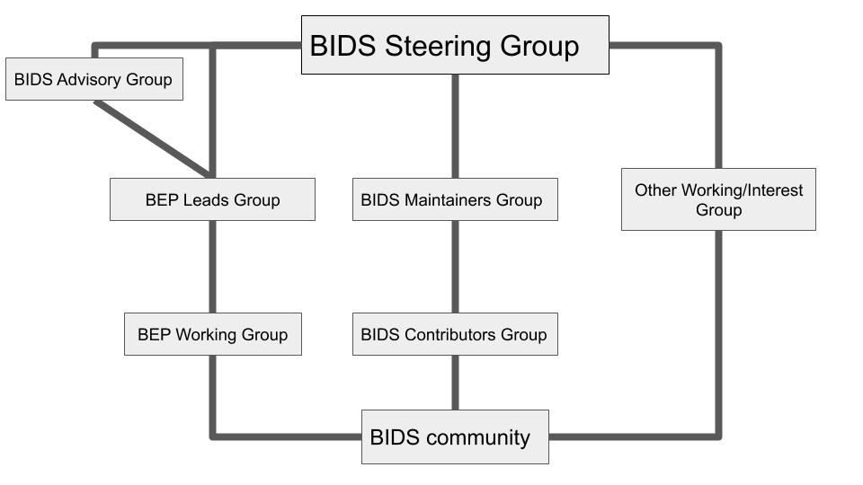

Governance and Decision Making
1. Introduction
This document, Brain Imaging Data Structure (BIDS): Governance and Decision Making, intends to describe the BIDS mission, its principles, its scope, the leadership structure, governance over the standard development process, and to define the different groups and roles. BIDS is a community-built and maintained standard. The goal of this document is to clearly describe how BIDS is maintained and grown.
2. Background
A. Project Summary
The Brain Imaging Data Structure (BIDS) is a standard specifying the description of neural and associated data in a filesystem hierarchy and of the metadata associated with the imaging data. The current edition of the standard is available in HTML with all the previous editions available since October 2018 (listed in the Changelog). The pre-October 2018 specification editions can be found in this repository as PDFs. The development edition is available in HTML. The specification is based in a GitHub repository and rendered with ReadTheDocs.
We strive for community consensus in decision making. This governing model and decision making procedure was developed through the review of several governance models across the informatics and computing field.
The project is a community-driven effort. BIDS, originally OBIDS, was initiated during an INCF sponsored data sharing working group meeting (January 2015) at Stanford University. It was subsequently spearheaded and maintained by Chris Gorgolewski. In the transitional period after Chris Gorgolewski's departure in early 2019 and before the community's acceptance of the present governance in late 2019, the project was managed and maintained by Franklin Feingold, Stefan Appelhoff, and the Poldrack Lab at Stanford. BIDS has advanced under the direction and effort of its contributors, the community of researchers that appreciate the value of standardizing neural and associated data to facilitate sharing and analysis. The project is multifaceted and depends on contributors for: specification development and maintenance, BIDS Extension Proposals (BEPs), software tools, starter kits, examples, and general discussions. The relevant discussions are located in our Google Group, GitHub organization, and public Google Documents (typically associated with an extension proposal).
A key component of the BIDS initiative is the collection of associated software tools and platforms that facilitate the validation and ease the use of BIDS-formatted datasets. BIDS converters (for example, HeuDiConv) enable the streamlined conversion of raw imaging files (for example, DICOMs) into a BIDS dataset, the BIDS validator allows users to confirm that a given dataset complies with the current edition of the standard, the PyBIDS Python and bids-matlab libraries allow querying and manipulating BIDS-compliant datasets, BIDS-Apps for running portable pipelines on validated BIDS datasets, and platforms like OpenNeuro store and serve BIDS datasets. Note that the associated software does not fall under the same governance structure as BIDS, although the contributor and user base may largely overlap.
B. BIDS Mission Statement
The goal of BIDS is to make neural and associated data more accessible, shareable, and usable by researchers. To achieve this goal, BIDS seeks to develop a simple and intuitive way to organize and describe neural and associated data. BIDS has three foundational principles:
-
To minimize complexity and facilitate adoption, reuse existing methods and technologies whenever possible.
-
Tackle 80% of the most commonly used neural data, derivatives, and models (inspired by the pareto principle).
-
Adoption by the global neuroscience community and their input during the creation of the specification is critical for the success of the project.
3. Leadership structure
To achieve the goals of widespread adoption of the standard while growing to adapt to its community of members, BIDS is led by a series of groups.
The following figure illustrates the structure of the groups described in this document. The specific organization and responsibilities of these groups are laid out in detail, below.

BIDS Steering Group
The BIDS Steering Group is responsible for approving and advancing BEPs through the BIDS standard process, as well as more general decisions regarding the standard. The BIDS Steering Group aims to preserve the longevity and sustainability of the BIDS standard. The BIDS Steering Group consists of 5 members, including the chair.
Membership on the BIDS Steering Group is through elections by BIDS Contributors. BIDS Steering Group terms are 3 years. The existing BIDS Steering Group is responsible for filling open positions, ensuring that at least two nominees are named for each position, that multiple imaging modalities (for example, MRI, MEG) are represented on the final committee, and the different needs for the specification (for example, users vs software developers). Given that the modalities included in BIDS will continue to evolve, we do not recommend a precise mechanism for this balance. It is therefore at the discretion of the Steering Group to ensure that modalities are appropriately represented. The chair is elected by a majority of the BIDS Steering Group (3 votes) to serve for a 1 year term. The chair cannot serve two consecutive years as chair. BIDS Steering Group members may hold other BIDS roles at the same time, for example BEP Working Group chair.
The BIDS Steering Group is the authority of last resort in addressing conflicts among groups and alleged violations of the Code of Conduct.
The Steering Group may delegate tasks as needed to fulfill its responsibilities.
The current members of the Steering group are:


Past members of the Steering group are:


BEP Working Group
A BEP Working Group is established for every BIDS Extension Proposal (BEP). Each working group will have 1-3 group-appointed leader(s), referred to as BEP Lead(s). Every BEP Working Group is formed with the aim of extending or modifying the BIDS standard into their domain of interest. This can be either an unspecified modality or derivative. The BEP Lead and Working Group will determine how they organize their work, following the BIDS governance standards laid out in section 4 of this document and the BIDS Code of Conduct. The BEP Working Group work is completed when their BEP has become a Merged BEP.
BEP Leads Group
The BEP Leads Group consists of the BEP Leads of the BEP Working Groups. This Working Group intends to ensure potential integrations and collaborations across BEPs are realized and consistency across the BIDS standard.
BIDS Maintainers Group
This group is responsible for maintaining the BIDS specification on GitHub. The Lead Maintainer and the Maintainers Group will determine how they organize their work, detailed in the BIDS Maintainers Group Guide and in accordance with the BIDS Code of Conduct. The BIDS Maintainers Group Guide is subject to Steering Group approval and amendment. BIDS contributors may self-nominate to become maintainers, with approval by a majority vote of current maintainers.
This group submits monthly status summaries to the Steering Group.
The current members of the Maintainers group are:


Past members of the Maintainers group are:


If you need to contact the maintainers on a specific topic you can use the following email: bids.maintenance@gmail.com.
However, you may receive a more timely response when pinging them on one of the GitHub repositories using the tag @bids-standard/maintainers.
BIDS Contributors Group
This group consists of individuals who have contributed to the BIDS community. Group members are identified on the BIDS contributors list, a list that is intended to be inclusive of all forms of engagement with the BIDS community, and that contributors are encouraged to update via the specification wiki. Engagement can range from writing copy text in the specification to providing feedback on projects such as the BIDS starter kit.
Members of the BIDS Contributors Group are encouraged to support the BIDS specification by supporting the members of the Maintainers Group in their responsibilities.
An Active Contributor is defined as a contributor that is reachable via the email address they provided to the BIDS Maintainers team, and responds to correspondence by the BIDS group (for example, Maintainers/Steering Group or the BIDS community at large). Contributors may explicitly opt in or out of activity at any time. The Maintainers Group is responsible for providing transparent procedures for contributors to opt in/out as well as providing procedures for removing non-responsive members from the list of active contributors. In case of no response, a grace period of two years is in place before a formerly active contributor loses their "active" status.
BIDS Advisory Group
The purpose of this group is to provide advice and guidance to the BIDS Steering Group and the BEP Leads Group. When a BEP is merged into the specification, the leads of this BEP working group automatically join the advisory group. Members are encouraged to participate for at least 2 years following the merge of their BEP. If an advisory group member decides to leave the advisory group, they should inform the steering group in advance and are responsible to help:
-
provide a list of possible replacement candidates from the BIDS community with a similar level of expertise to theirs, and
-
assist the steering and maintainers in choosing a suitable replacement.


Other working groups
A working/interest group can be established under the approval of the BIDS Steering Group. This is typically but not limited to being formed for the purpose of advancing the BIDS community, not the standard.
Each group will appoint 1-2 chairs. Members of these groups can have cross appointments in other groups (for example, BEP Working Group). These groups do not necessarily dissolve after some duration or event, unless stated in their proposal.
The working/interest group formation is formalized through an open letter via a "read-only" Google Document addressed to the BIDS Steering Group. The open letter will be posted on:
This proposal will state what their group aims and goals are.
BIDS Community
Along with members of the preceding groups, this group comprises broadly any individual who has used or has interest in using BIDS. All members are invited, and encouraged to join the BIDS Contributor Group by supporting the project in one of the many ways listed in the "All Contributors" emoji key. All community members are welcome to join BEP Working Groups and other working and interest groups.
The current BEP Working Groups and their leads can be found in the section on BIDS Extension Proposals in the BIDS specification.
4. Governance of the standardization process
A. Principles for open standards development
The BIDS approach to standards development follows the principles of the Modern Paradigm for Standards developed by OpenStand:
-
Respectful cooperation between standards organizations
-
Adherence to fundamental principles of standards development:
- Due Process
- Broad Consensus
- Transparency
- Balance
- Openness
-
Collective empowerment
-
Availability
-
Voluntary adoption
B. Standard decision making process overview
The foundation of BIDS decision making is listening to all members of the BIDS Community and striving to achieve consensus on each level of the BIDS standard process.
The criteria for forming a new BEP Working Group:
- Statement of intent with defined scope, deliverables, and use cases
- Statement of intent accepted by the BIDS Steering Group
The criteria of the BIDS Steering Group evaluation for elevating a Draft BEP to a Proposed BEP:
- Integrates into the current edition of the standard and is consistent with the BIDS Mission Statement
- Clearly defines a filename template and field names
- At least 10 business days of community feedback publicly posted across the BIDS channels
- Consensus reached among the Working Group
- Use cases and examples clearly illustrated
Upon a successful Draft BEP review, the BEP will be converted from a Google document to a pull request for the BIDS standard. This will enable further community feedback on the Proposed BEP. Tools may begin integrating the Proposed BEP specification.
The criteria for merging a Proposed BEP into the BIDS Standard:
-
Proposal positively reviewed by representative community members. The definition of "representative" will differ depending on the scope of the extension and will be reviewed as part of the Steering Group's final approval.
-
BIDS Steering Group final approval.
The Steering Group evaluates:
- Sufficiency of community feedback for the scope of the extension
- Validator updated to include the Proposed BEP specification
- Final review of the integration into the BIDS standard
X. Appendix
A. BEP Procedure: Key definitions
BIDS Specification
This is the BIDS specification. This covers the current raw data organization for brain MRI, MEG, EEG, and iEEG.
BIDS Extension Proposal (BEP)
A proposal that intends to extend BIDS into an unspecified modality or derivative. A BEP is typically led by 1-3 individuals with several contributors. The list of BEPs can be found elsewhere on this website.
Draft BEP
The in-progress document, typically in a Google Doc, of a BEP. This is dynamic and is grown and maintained at the discretion of a BEP Working Group.
Draft BEP review
This review is performed by the BIDS Steering Group on a Draft BEP. The review at this stage aims to ensure the structure clearly defines a template and field names along with it integrating into the philosophy, principles, and accepted standards of BIDS. The BIDS Steering Group approval action will be a majority vote. Upon BIDS Steering Group approval, the Draft BEP will be elevated to a Proposed BEP.
Proposed BEP
Once the BIDS Steering Group has approved the Draft BEP, it becomes a specific addition and/or modification of BIDS, in the form of a Proposed BEP. At this time, the Proposed BEP will take the form of a pull request on the BIDS GitHub repository.
Proposed BEP review
This review is performed by the BIDS Steering Group on the Proposed BEP. The review aims to ensure the community input was incorporated and the final version integrates into the current edition of the BIDS standard specification.
Merged BEP
A Proposed BEP that has been reviewed and approved by the Steering Group and merged into the BIDS standard.
B. Voting Procedure
The BIDS Steering Group is elected by a vote of the active BIDS Contributors Group. At the discretion of the BIDS Steering Group, additional elections may be called and propositions may be put before the community in the course of a Steering Group election.
Elections will be managed through a 3rd party platform that allows restricting votes to a specific set of email addresses while maintaining the anonymity of the votes. A list of email addresses from the Contributors Group will be maintained by the Steering Group for the purposes of announcing elections and will not be used for any other purpose and will never be analyzed together with voting data.
Each Contributor will receive an email with information regarding the vote and the link to submit the vote. The information will contain a brief summary of what the vote is about with links to the relevant issues, as well as the deadline for the vote.
For Steering Group members, a ranked choice/instant runoff voting scheme will be used. Propositions will be yes/no questions, with the outcome determined by a simple majority. Voters may abstain on any ballot item.
A vote will be considered valid if at least 20% of the Contributors submit votes.
C. Governance ratification and BIDS Steering Group initialization
In order to establish a governance procedure at the same time as a governing body, certain variations in the normal order are required.
Initially, Steering Group members will be elected for staggered terms of 2/3/4 years, to allow continuity and overlap across years. This will ensure institutional knowledge is preserved within the BIDS Steering Group. In the initial BIDS Steering Group, there will be at least one non-MRI modality represented.
The Steering Group member nominations were put forth by the BIDS Community from August 7-28, 2019. The nominees self-organized into slates of five candidates, with an identified Chairperson. Nominees were eligible to participate in multiple slates. The community will vote among these slates in a ranked choice/instant runoff voting scheme.
Because there are no grounds to restrict the vote to the BIDS Contributors Group prior to the ratification of this document, the electorate is to be the BIDS community, construed broadly as anybody with an interest in voting. The votes will be cast with two Google Forms: one to capture the vote and the other to record email addresses. The email addresses will not be analyzed together with the voting data, except to identify a situation in which many more votes are collected than valid email addresses. If the situation arises that the legitimacy of the vote is called into question, then the email addresses will be used to hold a special election under the terms laid out in Appendix B, according to which,
Elections will be managed through a 3rd party platform that allows restricting votes to a specific set of email addresses while maintaining the anonymity of the votes.
D. License
To the extent possible under the law, the authors have waived all copyright and related or neighboring rights to the BIDS project governance and decision-making document, as per the CC0 public domain dedication / license.
E. Help
The bids.neuroimaging.io website contains links to all the BIDS informational and help materials.
We encourage questions and discussion on NeuroStars, under the "bids" tag, via the BIDS mailing list, or in GitHub issues within the appropriate repository.
We prefer questions to be asked via NeuroStars so that others can search them and benefit from the answers, but if you do not feel comfortable asking your question publicly please feel free to email the BIDS maintainers at bids.maintenance+question@gmail.com. They will repost an anonymised/general version of your question on NeuroStars and answer it there.
There are several resources that can help a new user get started. We have a starter kit GitHub repository that has example BIDS file structures, wikis, and tutorials, and the Stanford Center for Reproducible Neuroscience blog provides tutorials and community survey results.
All BIDS community members are required to follow the BIDS code of conduct. Please contact the BIDS maintainers at bids.maintenance+coc@gmail.com if you have any concerns or would like to report a violation.
F. Acknowledgments
This document draws heavily from the Modern Paradigm for Standards and from other open-source governance documents including:
- https://numpy.org/doc/stable/dev/governance/index.html
- https://docs.scipy.org/doc/scipy/dev/governance.html
- https://www.ieee.org/about/corporate/governance/index.html
- https://www.apache.org/foundation/governance/
- https://www.niso.org/what-we-do/creating-NISO-standards
- https://chrisholdgraf.com/blog/2018/rust-governance
- https://www.seedsforchange.org.uk/consensus
- https://en.wikipedia.org/wiki/Internet_governance
- https://www.icann.org/resources/pages/governance/guidelines-en
- https://github.com/bids-standard/bids-specification/pull/104
- Drupal's Governance
- Drupal community's governance process
G. Election data and code
Anonymous data from BIDS elections is stored in a dedicated repository on GitHub: https://github.com/bids-standard/bids-elections
H. Governance amendment procedure
A group of BIDS contributors may at any time form a working group to propose amendments to the governance. These amendments will be first reviewed by the Steering Group before being submitted to a community review. At the end of the community review each amendment is submitted to a vote of BIDS contributors. The voting procedure is similar to the one described for the election of Steering Group members in Appendix B. Amendments are accepted if they gather more than two-thirds of the expressed votes.